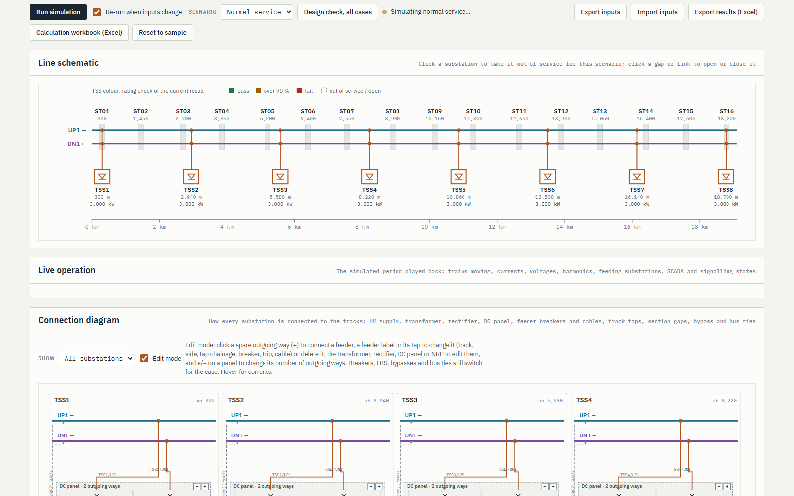
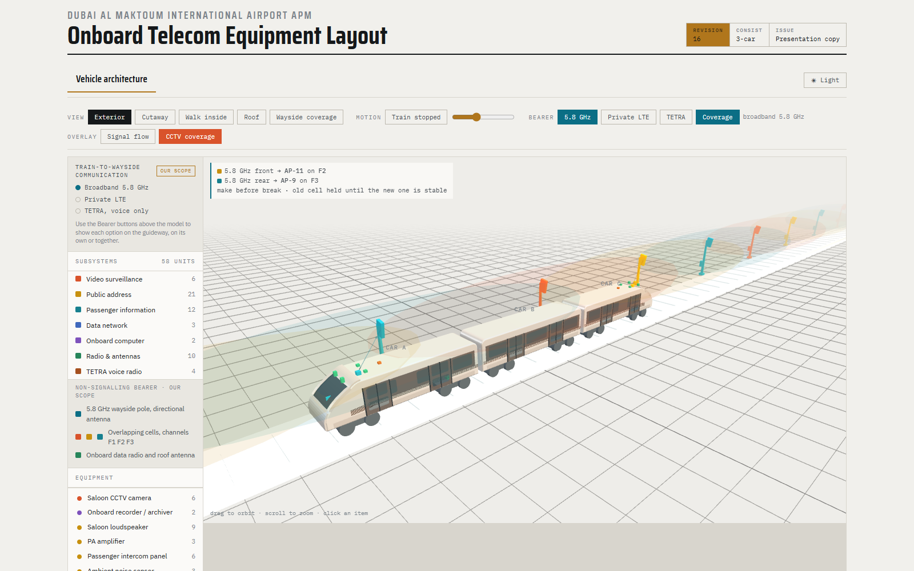
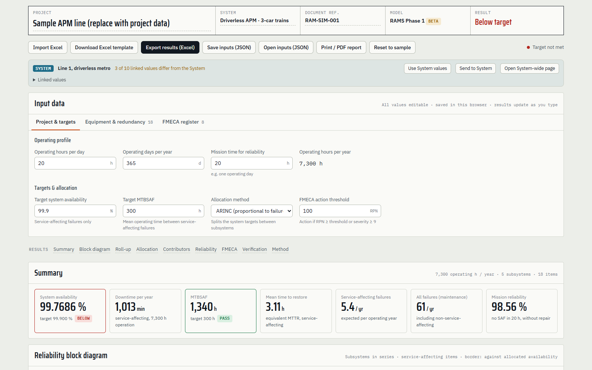
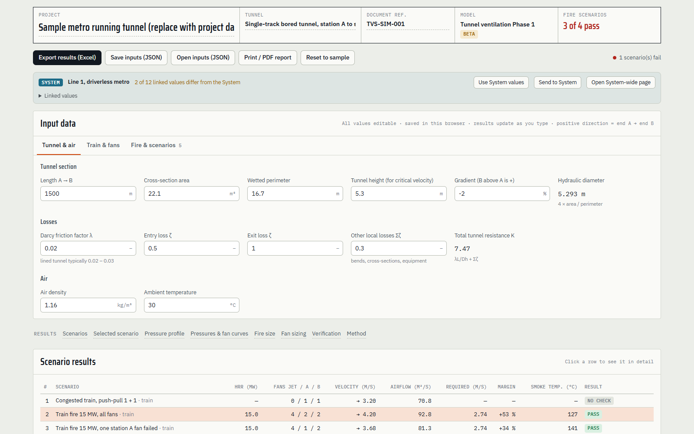
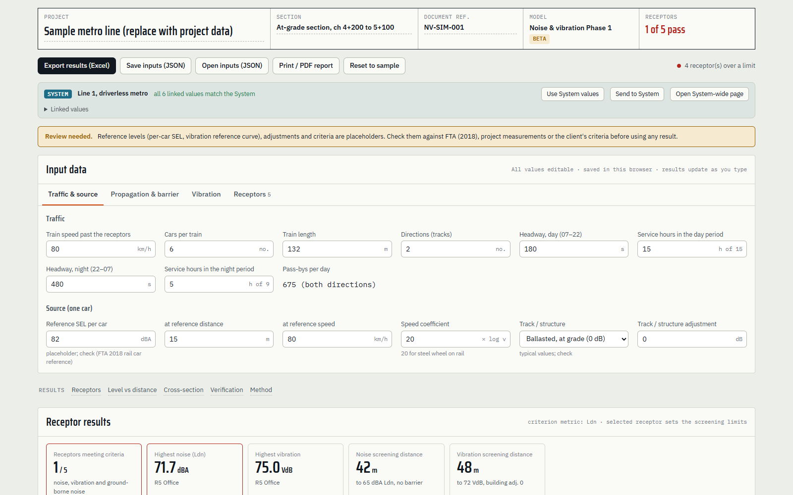

Simulate the whole railway before it is built.
Rail-IQ is our in-house platform that brings railway systems engineering, from traction power and telecom to RAMS, tunnel ventilation and noise, into one browser workbench.
Systems design is fragmented today.
Each discipline works in its own tools and spreadsheets. The same project data is typed in many times, and every design change starts the loop again.
Separate tools
Power, telecom, RAMS, ventilation and noise each run in different software, files and formats.
Inconsistent inputs
Headway, fleet and train data are re-entered by hand, so disciplines drift onto different assumptions.
Slow iterations
A what-if question can take days, and reports are assembled manually for every submission.
Define the system once. Every simulator uses it.
Line, fleet, train, power and tunnel data are entered on one System-wide page and flow into every simulator that needs them.
- One source of truth for project parameters across disciplines
- Runs in the browser: nothing to install, works on any company laptop
- Results shared back: each simulator publishes its headline results to the System page
Working today, not a concept.
Every simulator below is live on the portal and can be opened by the team now.
DC Traction Power
Second-by-second load flow of every train on the real alignment, sizing every substation and checking it against the standards.
- Train run, timetable and nodal network solved every second
- Equipment sizing, short circuit, harmonics and stray current
- Design check over every substation outage, with Word, PDF and Excel reports

APM Onboard Telecom
An interactive 3D train showing every onboard telecom item and how the vehicle talks to the wayside.
- Exterior, cutaway, walk-inside and roof views
- Compare 5.8 GHz, private LTE and TETRA bearers and their coverage
- Signal flow and CCTV coverage while the train runs

RAMS & Availability
Service availability and reliability of the whole system from an equipment list, with targets allocated to each subsystem.
- k-out-of-n redundancy and reliability block diagram
- Availability, MTBSAF and downtime against the targets
- FMECA register with risk priority and actions

Tunnel Ventilation
Airflow from jet fans and station fan plants, checked against the critical velocity needed to control smoke in a train fire.
- Fire scenarios with pass / fail against critical velocity
- Fan sizing and the largest fire the system can control
- Pressure profile along the tunnel and fan-failure cases

Noise & Vibration
Screening of train noise and ground-borne vibration at the buildings along the line, with barriers and distances to criteria.
- Noise and vibration at each receptor against its criteria
- Effect of noise barriers and screening distances
- Uses the same headway, train and speed data as the other simulators

From project data to submission-ready results.
Define
Enter the line, fleet and system data once, or import it from Excel and Word.
Simulate
Run any simulator in the browser. Results update as you change the inputs.
Verify
Pass / fail against the standards, and built-in checks on every engine.
Report
Export Word, PDF and Excel outputs ready for design submissions.
Value for the business.
Faster design cycles
What-if questions answered in minutes in a review, instead of days of rework.
One set of assumptions
Every discipline works from the same project data, so results stay consistent.
Transparent and verified
Methods, standards and verification checks are visible inside every simulator.
Reusable across projects
The same tools serve metro, APM and high-speed rail bids and delivery.
No install, low cost
Runs in a web browser with no licences to buy and no software to deploy.
Our own capability
Built in-house, so it grows with our projects and differentiates our offer.
Where Rail-IQ goes next.
Core simulators
- DC traction power
- APM onboard telecom
- RAMS & availability
- Fault tree & RBD workbench
- Tunnel ventilation
- Noise & vibration
- System-wide shared parameters
Complete the systems
- AC 25 kV traction power
- HV network & catenary
- CBTC headway & capacity
- Radio coverage & link budget
- RAMS tested on live project data
Operations & AI
- Train performance & running time
- Timetable & fleet sizing
- Station passenger flow & egress
- AI reading of project documents
- AI requirement mapping
Step into Rail-IQ.
Everything shown here is running on the portal. Open it and try a simulator now.
Open Rail-IQ